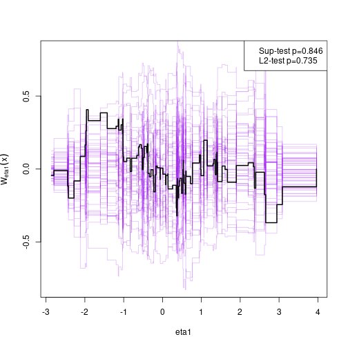

A general implementation of Structural Equation Models with latent variables (MLE, 2SLS, and composite likelihood estimators) with both continuous, censored, and ordinal outcomes (Holst and Budtz-Joergensen (2013) <10.1007/s00180-012-0344-y>). The package also provides methods for graph exploration (d-separation, back-door criterion), simulation of general non-linear latent variable models, and estimation of influence functions for a broad range of statistical models.
Installation
install.packages("lava", dependencies=TRUE) library("lava") demo("lava")
For graphical capabilities the Rgraphviz package is needed (first install the BiocManager package)
# install.packages("BiocManager") BiocManager::install("Rgraphviz")
or the igraph or visNetwork packages
install.packages("igraph") install.packages("visNetwork")
The development version of lava may also be installed directly from github:
# install.packages("remotes") remotes::install_github("kkholst/lava")
Citation
To cite that lava package please use one of the following references
Klaus K. Holst and Esben Budtz-Joergensen (2013). Linear Latent Variable Models: The lava-package. Computational Statistics 28 (4), pp 1385-1453. http://dx.doi.org/10.1007/s00180-012-0344-y
@Article{lava,
title = {Linear Latent Variable Models: The lava-package},
author = {Klaus Kähler Holst and Esben Budtz-Jørgensen},
year = {2013},
volume = {28},
number = {4},
pages = {1385-1452},
journal = {Computational Statistics},
doi = {10.1007/s00180-012-0344-y}
}Klaus K. Holst and Esben Budtz-Jørgensen (2020). A two-stage estimation procedure for non-linear structural equation models. Biostatistics, http://dx.doi.org/10.1093/biostatistics/kxy082
Examples
Structural Equation Model
Specify structural equation models with two factors
m <- lvm() regression(m) <- y1 + y2 + y3 ~ eta1 regression(m) <- z1 + z2 + z3 ~ eta2 latent(m) <- ~ eta1 + eta2 regression(m) <- eta2 ~ eta1 + x regression(m) <- eta1 ~ x labels(m) <- c(eta1=expression(eta[1]), eta2=expression(eta[2])) plot(m)

Simulation
d <- sim(m, 100, seed=1)
Estimation
e <- estimate(m, d) e #> Estimate Std. Error Z-value P-value #> Measurements: #> y2~eta1 0.95462 0.08083 11.80993 <1e-12 #> y3~eta1 0.98476 0.08922 11.03722 <1e-12 #> z2~eta2 0.97038 0.05368 18.07714 <1e-12 #> z3~eta2 0.95608 0.05643 16.94182 <1e-12 #> Regressions: #> eta1~x 1.24587 0.11486 10.84694 <1e-12 #> eta2~eta1 0.95608 0.18008 5.30910 1.102e-07 #> eta2~x 1.11495 0.25228 4.41951 9.893e-06 #> Intercepts: #> y2 -0.13896 0.12458 -1.11537 0.2647 #> y3 -0.07661 0.13869 -0.55241 0.5807 #> eta1 0.15801 0.12780 1.23644 0.2163 #> z2 -0.00441 0.14858 -0.02969 0.9763 #> z3 -0.15900 0.15731 -1.01076 0.3121 #> eta2 -0.14143 0.18380 -0.76949 0.4416 #> Residual Variances: #> y1 0.69684 0.14858 4.69004 #> y2 0.89804 0.16630 5.40026 #> y3 1.22456 0.21182 5.78109 #> eta1 0.93620 0.19623 4.77084 #> z1 1.41422 0.26259 5.38570 #> z2 0.87569 0.19463 4.49934 #> z3 1.18155 0.22640 5.21883 #> eta2 1.24430 0.28992 4.29195
Model assessment
Assessing goodness-of-fit, here the linearity between eta2 and eta1 (requires the gof package which can installed from CRAN)

Non-linear measurement error model
Simulate non-linear model
m <- lvm(y1 + y2 + y3 ~ u, u ~ x) transform(m,u2 ~ u) <- function(x) x^2 regression(m) <- z~u2+u d <- sim(m,200,p=c("z"=-1, "z~u2"=-0.5), seed=1)
Stage 1:
m1 <- lvm(c(y1[0:s], y2[0:s], y3[0:s]) ~ 1*u, u ~ x) latent(m1) <- ~ u (e1 <- estimate(m1, d)) #> Estimate Std. Error Z-value P-value #> Regressions: #> u~x 1.06998 0.08208 13.03542 <1e-12 #> Intercepts: #> u -0.08871 0.08753 -1.01344 0.3108 #> Residual Variances: #> y1 1.00054 0.07075 14.14214 #> u 1.19873 0.15503 7.73233
Stage 2
pp <- function(mu,var,data,...) cbind(u=mu[,"u"], u2=mu[,"u"]^2+var["u","u"]) (e <- measurement.error(e1, z~1+x, data=d, predictfun=pp)) #> Estimate Std.Err 2.5% 97.5% P-value #> (Intercept) -1.1181 0.13795 -1.3885 -0.8477 5.273e-16 #> x -0.0537 0.13213 -0.3127 0.2053 6.844e-01 #> u 1.0039 0.11504 0.7785 1.2294 2.609e-18 #> u2 -0.4718 0.05213 -0.5740 -0.3697 1.410e-19
f <- function(p) p[1]+p["u"]*u+p["u2"]*u^2 u <- seq(-1, 1, length.out=100) plot(e, f, data=data.frame(u))
Simulation
Studying the small-sample properties of a mediation analysis
m <- lvm(y~x, c~1) regression(m) <- y+x ~ z eventTime(m) <- t~min(y=1, c=0) transform(m,S~t+status) <- function(x) survival::Surv(x[,1],x[,2])
plot(m)

Simulate from model and estimate indirect effects
onerun <- function(...) { d <- sim(m, 100) m0 <- lvm(S~x+z, x~z) e <- estimate(m0, d, estimator="glm") vec(summary(effects(e, S~z))$coef[,1:2]) } val <- sim(onerun, 100) summary(val, estimate=1:4, se=5:8, short=TRUE) #> 100 replications Time: 4.49s #> #> Total.Estimate Direct.Estimate Indirect.Estimate S~x~z.Estimate #> Mean 2.02077 1.04080 0.97997 0.97997 #> SD 0.20260 0.19016 0.16079 0.16079 #> SE 0.18026 0.18018 0.16354 0.16354 #> SE/SD 0.88971 0.94749 1.01709 1.01709 #> #> Min 1.50738 0.63296 0.57620 0.57620 #> 2.5% 1.64480 0.67154 0.66439 0.66439 #> 50% 2.01884 1.05200 0.96656 0.96656 #> 97.5% 2.37284 1.39552 1.30304 1.30304 #> Max 2.51380 1.56400 1.48856 1.48856 #> #> Missing 0.00000 0.00000 0.00000 0.00000
Add additional simulations and visualize results
val <- sim(val,500) ## Add 500 simulations plot(val, estimate=c("Total.Estimate", "Indirect.Estimate"), true=c(2, 1), se=c("Total.Std.Err", "Indirect.Std.Err"), scatter.plot=TRUE)